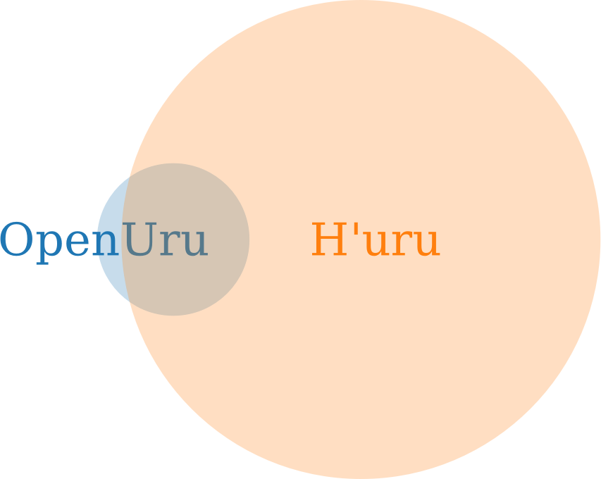

Since the DRC left D’ni in our hands in 2011, we have been the de facto caretakers of the history and culture. There were promises of large explorer involvements - allowing anything from new stories being told to problems being fixed and whole new areas being opened up. But what have we seen from this? Although much work has been done by explorers, only few effects are felt in the cavern. Why is this?
To understand the current situation, we have to know how we got here. Three important groups within the Uru volunteer community are H'uru, the Guild of Writers, and OpenUru.
Going back to at least 2004, H'uru is the oldest group of technicians in the Uru community. Although at times viewed unfavorable because of the bad connotations with hacking, their prior work gave the open-source project a running start.
When the DRC announced the restoration of the D'ni guilds, members of H'uru were quick to join the Guild of Writers. An officially recognised guild, the GoW aims to be a source of new Ages and a resource for Age builders.
As part of the open-source release of Uru, Cyan created the OpenUru group. Currently consisting of two members, OU is entrusted with the oversight of the open-source effort. All changes to the official game must go through the OpenUru pipeline.
The above only skims the surface of the history of the Guild of Writers and that of Myst Online: Uru live in general. At present, the Myst Online landscape consists of the official MOULa shard and several fan-run shards. Over the past decade, community members have been working hard to improve life on these shards in all sorts of ways. What have they achieved so far?
Below is a selection of the things that volunteers have achieved so far. Here, a crossed checkbox ▧ means that the achievement has been accepted into MOULa, Cyan's official shard. An empty checkbox ▢ means that something has been achieved by the Guild of Writers, but has not been brought to MOULa.
Given all of these great achievements, and the intention that Cyan voiced to open Myst Online up for community involvement, one may wonder why only so few of the achievements have been accepted onto the official MOULa server.
Software development is hard, even when all people involved are passionate about the project. However, it seems that over the last decade, OpenUru has been a bottleneck for MOULa development. They are working with a very small and closed team and it is difficult for others to contribute from the outside.
To illustrate the amount of work that is being withheld from implementation on MOULa, examine one of the largest components of open source Uru: the client engine. The below shows the relative amount of commits created by OpenUru and H'uru respectively (227 and 2241) since 2011. The OpenUru portion represents what is in MOULa, all else has not been accepted yet.
Also of note is the largest gap in time between consecutive commits to the respective client engine projects, visualised in time below. This shows how the OpenUru project at one point lay dormant for nearly two years, while the largest hiatus for the H'uru project lasted four months.
The current environment is detrimental to the health of open-source MOULa in several ways.
Anyone putting any time and effort into this obscure project must be doing it as a labour of love. And rightly so! Uru has the potential to become a truly unique place within the gaming landscape. But it will not make good on its open-source promise if those who want to contribute are not given the possibility to do so.
Ideally, OpenUru would open up and create an easier environment for Uru collaboration. If such changes do not occur, plans must be made to create an alternative to the OpenUru pipeline, so that more independence and openness can be achieved. Among other things, this would involve a collectively-run staging server. If you are interested in being part of these developments, please get in touch with the GoW!
Do you want to see all of the above achievements and more incorporated into MOULa? Let people know! Go onto Cyan's Discord, OpenUru's Discord, and the GoW IRC, and let them know about your support for their efforts and your desire to see their work in the cavern.
Let's get things moving!
"Leap without truly understanding what lies beneath, and let a glimpse of the future rise up to meet you. I'm terrified, but also full of hope that D'ni can now be truly restored, alive again." - Dr. Richard A. Watson
updated 2020/03/05 • by aqua • KI# 09061559